fg 명령어의 꿀팁: Ctrl+Z가 터미널 세션을 구하는 순간
게시: 18 April 2026
당신은 던집니다`./gradlew build`, 터미널이 3분 동안 차단되며, 다른 일을 해야 대기 중 인가요? 새 탭을 열 필요가 없습니다.`Ctrl+Z`프로세스를 일시 중지하고,`fg`그곳으로 정확히 데려다 놓습니다. 이는 개발자의 일상에서 가장 과소평가되는 유닉스 팁입니다.
- 틱
-
[]
문제 : 바쁜 터미널
모든 개발자는 이런 상황을 겪었습니다 :
$ ./gradlew build
> Building...터미널이 잠겼습니다. 더 이상 명령을 입력할 수 없습니다. 파일을 확인하고 실행해야 할`git status`, 또는 점유된 포트를 확인하세요.
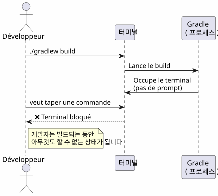
대부분의 개발자들은 새로운 터미널을 엽니다. 하지만 더 우아하고, 더 빠르고, 네이티브한 해결책이 있습니다: 작업 관리
세 가지 필수 명령어
Ctrl+Z — 일시 중지 (SIGTSTP)
`Ctrl+Z`신호를 보냅니다`SIGTSTP`포그라운드 프로세스에. 프로세스는중단된— 죽지 않은 — 그리고 터미널이 프롬프트를 되찾는다.
$ ./gradlew build
> Building...
^Z
[1]+ Stoppé ./gradlew build
$대괄호 안의 숫자`[1]`(two spaces)잡 번호. Le `+`기본 작업을 나타냅니다.
fg — 앞으로 가져오기
`fg`일시 정지된 작업을 포그라운드로 가져옵니다. 프로세스는 정확히 중지된 지점에서 다시 시작됩니다.
$ fg
./gradlew build
> Building... (reprend où il en était)특정 작업 번호:
$ fg %2bg — 백그라운드에서 재개
`bg`프로세스를 sans 블로킹하지 않고 계속 진행하세요. 긴 빌드에 적합합니다.
$ bg
[1]+ ./gradlew build &
$Le `&`마지막에 그것은 프로세스가 백그라운드에서 실행 중임을 의미합니다.
jobs — 셸의 작업 목록 보기
$ jobs
[1]- Stoppé vim README.md
[2]+ En cours ./gradlew build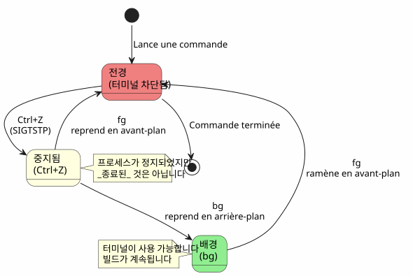
시나리오 1 : 긴 빌드
이는 가장 일반적인 사용 사례입니다. Gradle 빌드를 실행하면 터미널이 막히고 다른 작업을 해야 합니다.
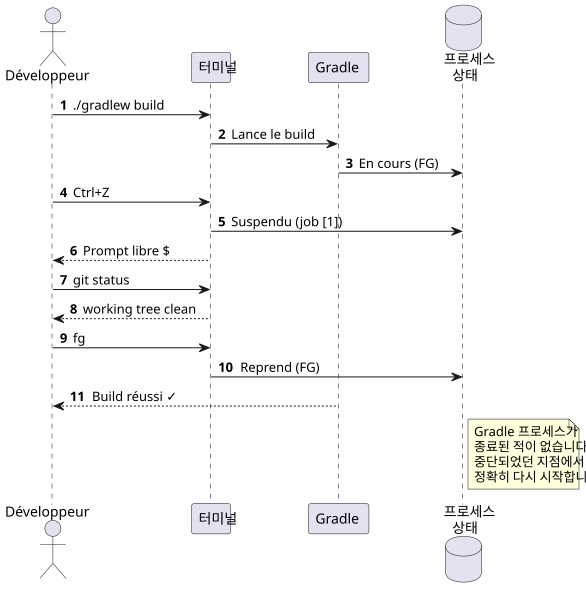
한 걸음씩
$ ./gradlew build
> Building...
^Z
[1]+ Stoppé ./gradlew build
$ git status
On branch main
nothing to commit, working tree clean
$ fg
./gradlew build
> Building...
BUILD SUCCESSFUL in 2m 34s시나리오 2 : 잊어버린 편집자
당신은 안에 있습니다`vim`, 다른 파일을 sans 떠나지 않고 확인해야 합니다`vim`.
# Dans vim, en mode commande :
:shell
$ cat /path/to/other/file.txt
$ exit
# Retour dans vim하지만 그것은 무겁다. 그리고`Ctrl+Z`, 즉시적입니다 :
# Dans vim, n'importe quel moment :
Ctrl+Z
[1]+ Stoppé vim README.md
$ cat /path/to/other/file.txt
# ... lire le fichier ...
$ fg
vim README.md
# Retour exact là où on en était, curseur en place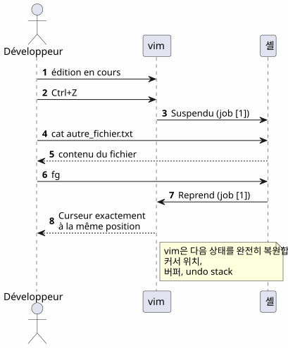
참고:`vim`완벽하게 그 상태를 복구한 후`fg`: 커서 위치, 버퍼 내용, 실행 취소 기록 — 전부 보존됩니다.
시나리오 3: opencode 프로세스가 일시 중지됨
이 기사를 쓰게 된 계기는 이 시나리오입니다. 당신은 사용하고 있습니다.opencode(코드에서 LLM을 실행하기 위한 CLI 툴), 그리고 프로세스가 중지됩니다.
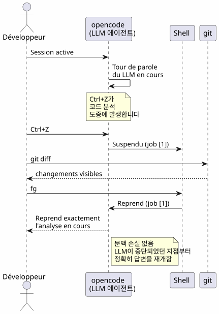
$ opencode
# ... session en cours, LLM analyse le code ...
^Z
[1]+ Stoppé opencode
$ git diff HEAD~1
# vérifier les changements récents
$ fg
opencode
# Le LLM reprend là où il s'était arrêté장점은 두 배입니다:
-
컨텍스트 손실 없음: LLM 세션, 대화 기록, 열린 파일 — 모든 것이 보존됩니다
-
재시작 없음opencode를 재시작할 필요 없고, 컨텍스트를 재로드할 필요 없고, LLM에게 문제를 다시 설명할 필요 없어
시나리오 4 : 여러 작업을 동시에 관리하기
fg et `bg`여러 개가 일시 중지된 상태에서 특정 프로세스를 대상으로 작업 번호를 받아들입니다.
$ vim config.yml
^Z
[1]+ Stoppé vim config.yml
$ ./gradlew test
^Z
[2]+ Stoppé ./gradlew test
$ htop
^Z
[3]+ Stoppé htop
$ jobs
[1] Stoppé vim config.yml
[2]- Stoppé ./gradlew test
[3]+ Stoppé htop
$ fg %2
./gradlew test
# Le build reprend en avant-plan
$ bg %3
[3] htop &
# htop reprend en arrière-plan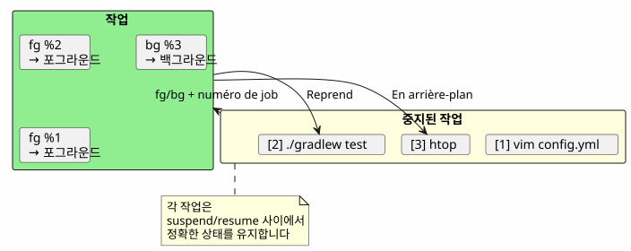
작업 명령어 요약
| 주문 | 효과 | 예시 |
|---|---|---|
|
전경 프로세스를 일시 중지합니다 |
전송`SIGTSTP` |
|
기본 작업을 포그라운드에서 재개합니다. |
|
|
작업 n을 전경에서 재개 |
|
|
백그라운드에서 기본 작업 재개 |
|
|
백그라운드에서 작업 n을 다시 시작 |
|
|
현재 쉘의 작업 목록을 나열 |
|
|
작업 n 종료 |
|
fg, bg, Ctrl+Z, Ctrl+C 및 &의 차이
많은 개발자들이 이러한 메커니즘을 혼동합니다. 이것이 결정적인 명확화입니다.
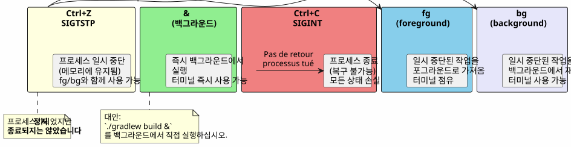
| 단축키/명령 | 신호 | 효과 | 뒤로 가시겠어요? |
|---|---|---|---|
|
|
프로세스를 일시 중지 (메모리 내에 고정된, 동결된) |
네 :`fg` ou |
|
|
프로세스를 죽이세요 (완료됨) |
아니요 : 파괴된 프로세스 |
|
|
프로세스를 죽이고 + 코어 덤프 |
아니요: 프로세스가 파괴되었습니다. |
|
— |
백그라운드에서 바로 실행 |
`fg`앞으로 가져오기 위해 |
Ctrl+Z`이다비파괴적. 프로세스는 그대로 메모리에서 정지됩니다. 당신은 즉시 이어서 할 수 있습니다.`fg. 이것은 _pause_일 뿐, _stop_이 아닙니다.
|
작업의 전체 수명 주기
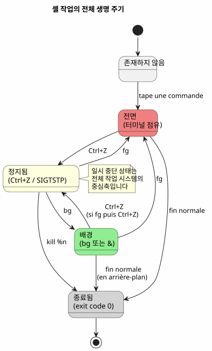
고급 팁
fg와 가장 최근의 직업 및 교대
fg`인수 없이 표시된 작업을 되돌린다.+(가장 최신). 하지만 또한 사용할 수 있습니다%-`이전 작업을 대상으로 지정하려면 :
$ vim file1.txt
^Z
[1]+ Stoppé vim file1.txt
$ vim file2.txt
^Z
[2]+ Stoppé vim file2.txt
$ fg # ramène job [2] (le plus récent)
$ fg %- # ramène job [1] (le précédent)작업을 깔끔하게 종료하다
$ jobs
[1]- Stoppé vim config.yml
[2]+ Stoppé ./gradlew test
$ kill %2 # envoie SIGTERM au job 2
$ kill -9 %1 # envoie SIGKILL au job 1 (force)disown : 쉘에서 분리
disown`쉘의 작업 테이블에서 작업을 제거합니다. 프로세스는 계속 실행되지만 더 이상 불러올 수 없습니다.`fg:
$ ./gradlew build &
[1] 12345
$ disown %1
# Le processus continue mais n'est plus lié au shell
# Ça survives à la fermeture du terminalnohup과 결합하여 긴 프로세스를 실행
터미널이 종료될 때 프로세스가 살아남게 하려면 :
$ nohup ./gradlew build &
[1] 12345
$ disown %1
# Le build continue même si vous fermez le terminal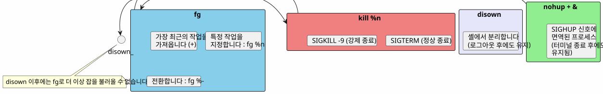
함정과 일반적인 오류
Ctrl+Z와 Ctrl+C를 혼동하다
가장 흔한 실수입니다.`Ctrl+C`프로세스를 죽입니다.`Ctrl+Z`그를 중단합니다. 만약 당신이 누르면`Ctrl+C`반사적으로, 전체 상태가 손실됩니다 — 열린 파일, LLM 세션, 진행 중인 빌드.
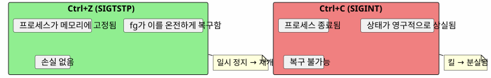
작업은 셸에 국한됩니다.
jobs, fg et `bg`다른 터미널을 열면 다른 터미널의 작업을 볼 수 없습니다.
# Terminal 1
$ vim file.txt
^Z
[1]+ Stoppé vim file.txt
# Terminal 2 (nouveau)
$ jobs
# (rien — les jobs sont locaux au shell)시스템 전체 프로세스를 보려면`ps` ou htop:
ps aux | grep vim작업은 셸이 닫히면 생존하지 못합니다.
터미널을 닫으면 일시 중지된 작업 또는 백그라운드 작업이 모두 삭제됩니다. 프로세스가 살아남으려면 사용`nohup`+disown:
$ nohup ./gradlew build &
[1] 12345
$ disown %1
# Fermer le terminal → le build continue대화형 프로세스와 fg
일부 대화형 프로그램은 한 이후에 잘 작동하지 않는다`Ctrl+Z`+fg. 드문하지만 발생한다 :
-
신호를 사용하는 일부 프로그램(vim, htop, less)은 잘 처리합니다.
Ctrl+Z) -
장시간 실행되는 네트워크 프로그램(ssh, opencode)은 일반적으로 정상적으로 복구됩니다.
-
터미널을 수정하는 프로그램(ncurses)은 때때로 터미널을 예기치 않은 상태로 남겨둘 수 있다
터미널이 손상된 후`fg`, 입력 :
reset요약 다이어그램
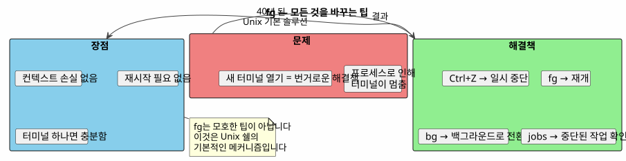
왜 fg가 과소평가되는가?
대부분의 현대 개발자들은 발견합니다`fg`늦거나, 전혀 이루어지지 않을 수도 있습니다. 몇 가지 이유 :
-
IDE는 터미널을 숨깁니다.: VS Code는 내장 터미널을 제공하지만, 여러 탭이`fg`겉으로는 덜 필요함
-
그래픽 도구가 CLI를 대체합니다: 파일 관리자, 시스템 모니터, 그래픽 Git 클라이언트
-
tmux와 스크린: 이 멀티플렉서는 같은 문제를 다르게 해결하지만`fg`더 간단하고 항상 사용 가능합니다
그런데,`fg`는 :
-
보편적인POSIX 셸 모두에 존재 (bash, zsh, fish…)
-
의존 없이tmux 또는 screen을 설치할 필요가 없습니다
-
스냅샷: 두 번의 타격 (
Ctrl+Z`그리고`fg) 일시 중지 및 재개를 위해 -
컨텍스트 보존자: 프로세스의 상태는 무결합니다
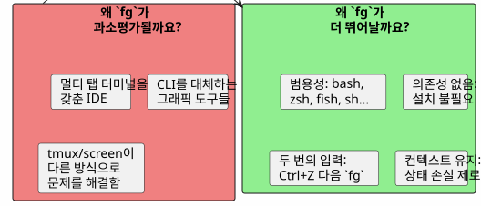
기술 메모리 : 신호
호기심을 가진 사람들을 위해, 관련된 신호는 다음과 같습니다:
| 신호 | 이름 | 보낸 사람 | 효과 |
|---|---|---|---|
2 |
|
|
중단 — 프로세스를 종료합니다 |
3 |
|
|
코어 덤프와 함께 종료 |
18 |
|
|
대화형 정지 — 프로세스 일시 정지 |
19 |
|
|
계속 — 일시 중지된 프로세스를 재개한다 |
15 |
|
|
깨끗한 종료 |
9 |
|
|
강제 종료 (차단할 수 없음) |
전체 흐름 :
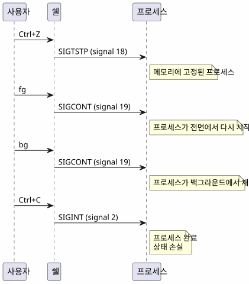
결론
`fg`이것은 obscure한 팁이 아니라, 1970년대부터 사용 가능한 Unix 셸의 기본 메커니즘입니다. 대부분의 개발자들이 이를 모른다는 사실은 우리의 시대를 보여주는 증상입니다: IDE와 멀티플렉서가 우리에게 기본으로부터 멀어지게 만들었습니다.
하지만 SSH 서버에 접속해 있거나, 최소한의 터미널을 사용 중이거나, 단순히 사용 중인 경우`opencode`그리고 LLM은 한창 작업 중입니다 —Ctrl+Z, fg, bg, `jobs`votre 가장 친한 친구들이에요.
_ Ctrl+Z 일시정지, fg 재개. 터미널의 일시정지-재생입니다. _
참고문헌
-
man bash— 섹션 JOB CONTROL -
man signal— POSIX 신호 목록
관련 기사
31 May 2026
14 May 2026